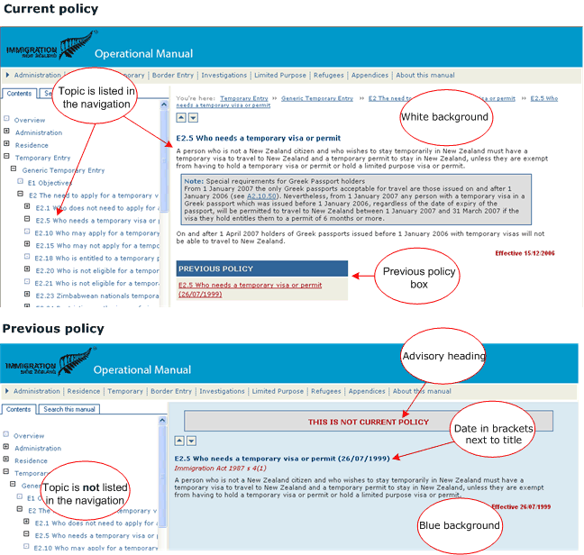

|
- This is not current policy -
The policy in this manual ceases to be effective from 29 November 2010.
To see the current Immigration New Zealand Operational Manual go to
www.immigration.govt.nz/opsmanual
|
About this manual
The Immigration New Zealand (INZ) Operational Manual contains the policy that people wanting to come to New Zealand permanently or for a short time must follow. It includes the criteria that applicants must meet, the evidence they must produce to show that they meet the criteria, and the processes INZ follow to assess and verify applications. The Manual also contains information about INZ's work in protecting New Zealand's border and determining claims for refugee status.
By publishing the Operational Manual, INZ meets its requirements under section 13A of the Immigration Act 1987 to publish Government policy on granting visas and permits.
This Manual is not:
- a step-by-step guide to work processes, or
- a replacement for the legislation that governs INZ operations.
Read it in conjunction with the relevant provisions of the Immigration Act 1987, the Immigration Regulations 1991, and other applicable statutes.
More information
 How the Manual is organised
How the Manual is organised
The table below shows how information in the INZ Operational Manual is grouped.
|
|
Section
|
Content
|
Entry type (Residence, Temporary Entry, Limited Purpose)
|
The Residence section contains the policies for people who want to come to New Zealand to live on a permanent basis.
The Temporary Entry and Limited Purpose sections contain policies for those wishing to come to New Zealand to visit, study, or work.
Note that each of these sections includes a generic section containing requirements that all applicants for residence or temporary entry must meet, unless specifically stated otherwise.
|
Specific group (Border, Investigations, Refugees)
|
The Border, Investigations, and Refugees sections of the Manual detail internal INZ operational policies and are included in the Manual for ease of access and completeness.
|
Administration*
|
This section contains general information about lodging applications, how they will be assessed, and any rights of appeal.
|
Appendices*
|
Additional useful information such as which office to lodge an application with, fees payable, and which countries need to use panel doctors.
|
Glossary
|
Contains definitions of all the terms used within policy. These can also be accessed directly from the policy provision by clicking the hyperlink from the term to the Glossary.
|
* Note that the Border, Investigations, and Refugees sections and some of the Appendices in the Manual do not constitute Government immigration policy as described in section 13A(1) of the Immigration Act 1987.
|
How to find information in the Manual
There are two main ways to find for information in the INZ Operational Manual:
- Using the left hand Contents menu: The pane to the left of the screen displays the different types of visa and permit applications grouped according to permanent and temporary entry. Click on the plus icon next to the topics to open the menus and locate the appropriate policy.
- Using the top menu: Policies are grouped the same way in the menu across the top of the screen. You can click these directly from any screen while you are in the Manual.
How to move around the Manual
How to tell the difference between current and previous policy
All policy has a date at the end of the provision to show when that policy is effective from. When changes are made to policy, the previous version is still held in the Manual but the way it looks is changed so you can tell whether you are referring to current or previous policy.
Access an earlier version of a policy by clicking the link in the Previous Policy box at the end of the provision.

Understanding legal references within the Manual
Some policy in this Manual summarises sections of the Immigration Act 1987, the Immigration Regulations 1991, and other statutes and international agreements. Where this occurs, references to the specific Act or Regulation are noted in italics immediately after the section or subsection heading.
These are intended as a guide to the legal provisions relevant to the particular policy provision that they precede, and are not necessarily comprehensive.
The summarised legal provisions are declaratory only. This means that if the interpretation of the summarised legal provisions conflicts with the interpretation of the legislation itself, then the interpretation of the legislation is decisive.
Also note that the legal provisions do not in themselves constitute Government immigration policy.
Role of Immigration New Zealand
Immigration New Zealand (INZ) is part of the Department of Labour, a Government department that helps people achieve high-quality working lives in thriving and inclusive communities through linking their social and economic interests.
INZ aims to increase the economic and social framework of New Zealand by:
- facilitating residence and temporary entry into New Zealand, and
- ensuring that those who cross New Zealand's borders observe the provisions of New Zealand's immigration policy and legislation.
Most of INZ's operational work is focused on deciding residence, returning resident's visa and temporary entry applications, but we also provide information and respond to general enquiries. In addition, INZ removes people who are in breach of immigration law, or resolves their immigration status in other ways.
Another responsibility is to determine claims for refugee status in New Zealand under the 1951 Convention Relating to the Status of Refugees and the 1967 Protocol. We select quota refugees and escort them to New Zealand, as well as arrange for their accommodation and induction after they arrive in New Zealand.
Visa officers in the Ministry of Foreign Affairs and Trade (MFAT) may be responsible for limited immigration operations at overseas posts where there is no INZ branch. Customs officers act as immigration officers at places of entry to New Zealand.
Help
Underpinning all our activity is the desire to provide the best possible service and to demonstrate honesty, fairness, confidentiality and respect in all our dealings. If you need help understanding the policy in this Manual, please contact us.